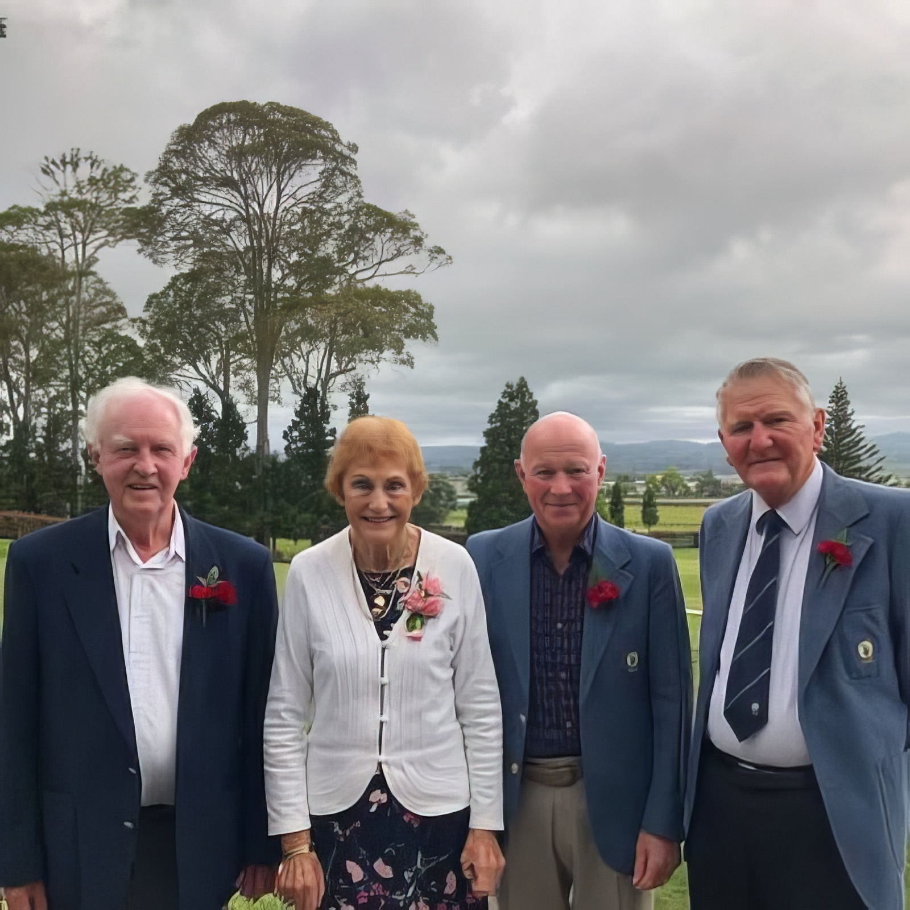

Our Life Members.
The honour roll published in Pars from the Past in 2014, presented as a starting point for a growing record of service.
This list follows Mowat’s published roll. Dates are the dates of recognition as recorded there. “Prior to 1948” and “1948–49” retain the book’s dating. The list is historical through 2014; later appointments can be added from club records.
View the original honour roll · p. 304 → Text view · Read about the early Life Members · p. 61 → Text view
| Member | Recognition |
|---|---|
| Mr E T Baker | Prior to 1948 |
| Mr R T Goulding | Prior to 1948 |
| Mr D A Ivory | Prior to 1948 |
| Mr A J Mirrielees | Prior to 1948 |
| Mr P H Roach | Prior to 1948 |
| Mr H B Lusk | 1948–49 |
| Mr C Steedman | 1948–49 |
| Mr J A Towsey | 1948–49 |
| Mr S G Wilcock | 1948–49 |
| Mr H J W Bradmore | 1958 |
| Mr A W Nicol | 1958 |
| Mr R J Phelan | 1963 |
| Mr A L Davidson | 1964 |
| Mr K Nattrass | 1973 |
| Mr J C Hare | 1980 |
| Mr K Frith | 1985 |
| Mr A Gallagher | 1988 |
| Mr M W White | 1991 |
| Mr N Copestake | 1997 |
| Mr B Child | 1997 |
| Mr K D Dawkins | 2000 |
| Mr D G S Mowat | 2006 |
| Mr E A Craig | 2007 |
| Mrs E Hanna | Prior to 1948 |
| Mrs S R Gordon | Prior to 1948 |
| Mrs A Mark | 1963 |
| Mrs J Carnachan | 1972 |
| Mrs J Edwards | 1980 |
| Mrs E (Nen) Sim | 1985 |
| Mrs E Galbally | 1994 |
| Mrs H Casey | 2000 |
| Mrs P Copestake | 2005 |
| Mrs P Sandlant | 2006 |
Source: David G. S. Mowat, editor, Pars from the Past (2014), p. 304. Read the original page for the printed layout.
Later appointments
These appointments extend the historical roll above, with their own source attribution.
Jack Carter · 2019
Source: Club heritage contribution, 10 November 2026 →
Alison Holdem · 2019
Source: Club heritage contribution, 10 November 2026 →
Adrienne Coad · 2022
Source: Club heritage contribution, 10 November 2026 →
Jackie Reynish · 2023
Source: Club heritage contribution, 10 November 2026 →
Chris McAlpine · 2024
Source: Club heritage contribution, 10 November 2026 →
The people behind the honour roll
Profiles added from the supplied Life Members compilation on 10 November 2026. Some reproduce or overlap Mowat’s account; others add later club notices or biographical context. Sources and dates stay with each profile.
Elsie HannaRead the profile
Elsie arrived in Tauranga in 1922, won the senior championship in 1924 and 1926, and served on the women’s committee from 1926 to 1939. She became the club’s first woman Life Member before 1948.
The supplied profile recalls the practical work behind interclub hospitality: heating water outdoors and preparing refreshments with limited facilities. Its accompanying trophy sheet dates her presentation of the Elsie Hanna Cup to 1948.
Supplied source: Life Members Landscape.pdf, PDF pp. 1, 2.
Noel CopestakeRead the profile
Noel joined in 1960 and served as captain, president and a member of the inaugural Board. Elected a Life Member in 1997, he contributed to twilight golf, pennant teams and the volunteers known as the Wednesday Firewood Gang.
The supplied club announcement of 12 April 2016 records his death that morning and remembers his long commitment to practical work around the course.
Supplied source: Life Members Landscape.pdf, PDF pp. 3.
Bernie ChildRead the profile
Bernie brought the skills of a machinery contractor to the club’s many volunteer projects. He organised work for the veterans, served as their president in 1995 and built the drinking fountain behind the first tee. His service was recognised with Life Membership in 1997.
The supplied page is identified as a reproduction from Mowat’s book; this profile provides a route into that existing history rather than a new appointment.
Supplied source: Life Members Landscape.pdf, PDF pp. 4.
Hazel CaseyRead the profile
Hazel helped beginners, schoolchildren and women new to golf. The supplied feature remembers a Saturday group known as Hazel’s Girls and her support for the introduction of nine-hole golf.
Mowat records her arrival at Tauranga Golf Club in 1970 and her earlier start on a small farm course near Ōpōtiki. Her childhood teacher was an earlier Jack Carter, the great-grandfather of professional Jay Carter; he should not be confused with Jay’s father, whose personal account is now in this collection.
Supplied source: Life Members Landscape.pdf, PDF pp. 5.
Ernie CraigRead the profile
Ernie’s long service helped secure the administration and development of the Racecourse Reserve. Mowat describes his work on the reserve’s management arrangements and his Life Membership of both the golf and racing clubs.
The supplied newspaper obituary extract adds context about his business and community service, including his work in accountancy and regional organisations. Only the golf and reserve connection is summarised here; the compilation contains page 2 of the original three-page article.
Supplied source: Life Members Landscape.pdf, PDF pp. 6.
Peg CopestakeRead the profile
The supplied achievement summary brings together Peg’s playing record, rules knowledge and volunteer service. It records her joining in 1961, her albatross at the sixth hole in 1966, and her work with juniors and new members.
It also records her election as club president in 2001–02, Life Membership in 2005, and a round of 72 on 23 February 2005 when she played to her age. The summary credits Mowat, Bay of Plenty golf and club records, family memorabilia and the Life Membership application compiled by Wendy Hanna.
A separate clipping remembers her achievements in several other sports before and alongside golf.
The supplied summary’s championship years of 1974, 1979 and 1984 agree with the book’s honour roll on pp. 291–292. The two wins mentioned in the narrative on p. 96 concern interruptions to Una Wickham’s winning sequence before her final championship in 1980.
Supplied source: Life Members Landscape.pdf, PDF pp. 7, 8, 9.
Compare with Mowat: p. 38 Text view · p. 72 Text view · p. 96 Text view · p. 291 Text view · p. 292 Text view
H B LuskRead the profile
Mowat credits H B Lusk with helping design the course when the club moved to the Racecourse Reserve and records Life Membership in 1948–49.
The supplied compilation includes a biographical clipping headed Harold Lusk, covering his wider career in teaching, cricket and golf. The club history remains the reference for the course-design and Life Membership details.
Supplied source: Life Members Landscape.pdf, PDF pp. 11.
A J MirrieleesRead the profile
Mowat describes A J Mirrielees’s work on the extensive planting programme that helped shape the course. He was among the club’s Life Members honoured before 1948.
The compilation adds an extract from Debbie McCauley’s biography of Alexander James, or Alick, Mirrielees. It places his golfing contribution within a wider life as a pharmacist, photographer and participant in Tauranga’s civic organisations. His photographic work also connects with the early images preserved in this collection.
The compilation contains an extract from the biography, not the complete ten-page original.
Supplied source: Life Members Landscape.pdf, PDF pp. 12, 13, 14, 15, 16, 17, 18.
Compare with Mowat: p. 61 Text view · p. 97 Text view · p. 189 Text view
Phyll SandlantRead the profile


Photograph and identification added 11 November 2026. Photograph date not supplied.
Phyll led the local promotion of women’s nine-hole golf. Her account in Mowat’s book recalls 96 women responding to the first invitation in February 1998, followed by coaching with Rick Barker and support from member volunteers. She became a Life Member in 2006.
The supplied club notice of 23 February 2023 records her death and remembers her as a driving force behind the success of the nine-hole membership. This later notice extends the record beyond the book’s publication.
Supplied source: Life Members Landscape.pdf, PDF pp. 19, 20.
Evelyn “Nen” SimRead the profile
In 1974 Nen became the first woman elected to the club executive, standing in open competition with male nominees. She brought experience as handicapper, committee member and writer of the Bunkered women’s golf column.
Her work also supported the club’s social life and twilight catering. She was elected a Life Member in 1985.
The supplied profile credits Pars from the Past and largely reproduces the account already in the book.
Supplied source: Life Members Landscape.pdf, PDF pp. 21.
The compilation also contains correspondence, a historical subscription sheet and third-party clippings. The profiles summarise the relevant history; private email headers, signatures and administrative instructions are not reproduced.